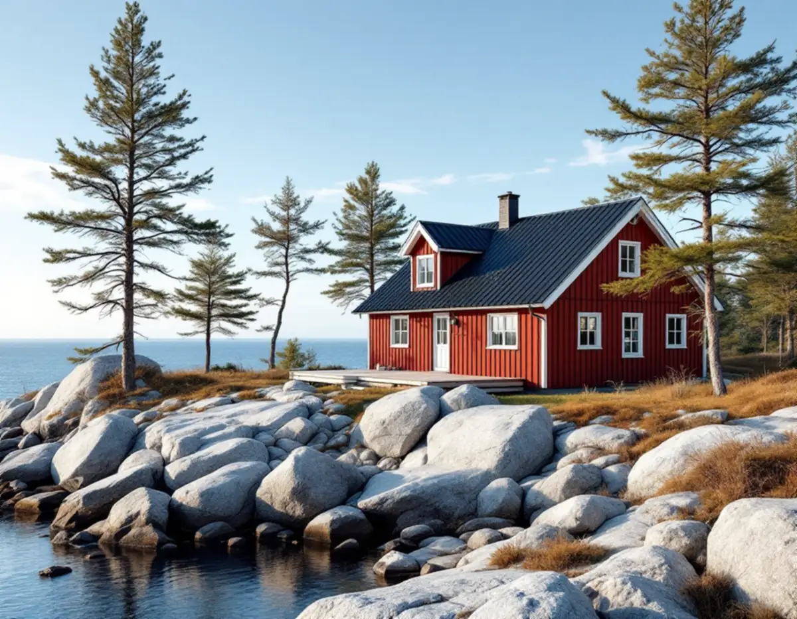
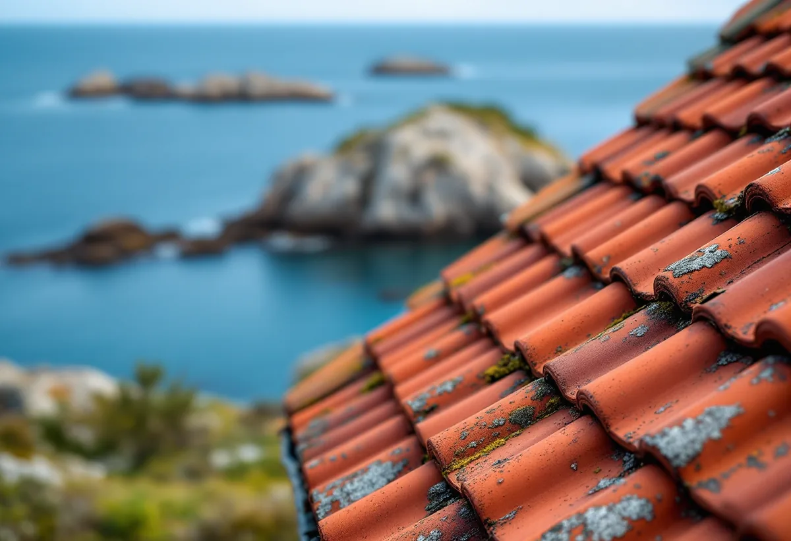

Platsbesök
Vi bedömer tak, takstolar och vind och noterar hur huset står mot vind och väderstreck.
Norrtälje kommun har många riksintresseområden för kulturmiljövården, och många hus står öppet mot havet. Vid ett takbyte här väger både vind, snö och lokal byggtradition in i valet av material. Geal Entreprenad AB byter tak i Norrtälje med omnejd och lämnar ett skriftligt kostnadsförslag efter ett gratis platsbesök.

Norrtälje kommun beslutade 2011 att göra kulturhistoriska utredningar av flertalet av kommunens riksintresseområden för kulturmiljövården, både som beslutsunderlag och för att informera allmänheten. Utredningarna finns digitalt på kommunens webbplats, och tryckta versioner säljs bland annat på Roslagsmuseet.
Utredningen för Arholma ger en bild av hur taken har sett ut. Taktäckningen var traditionellt ofta tjärat spån på ekonomibyggnader och torp. Senare kom det enkupiga teglet på bostadshusen, medan plåt och tvåkupigt tegel blev vanligast på ekonomibyggnaderna. Järnplåt och lertegel var dyrt och hörde till herrgårdarna fram till 1900-talet.
Utredningens råd är att taktäckningen väljs med hänsyn till lokal tradition och byggnadens funktion. Den visar också hur lätt det gamla försvinner: på Arholma kyrka har de tegelbelagda taken bytts mot plåt, medan exteriören i övrigt är i stort sett oförändrad. Hur husen i kommunen ser ut i stort beskrivs under takläggare i Norrtälje.

Boverkets vägledning om vindlast delar in terrängen i typer. Den mest utsatta, terrängtyp 0, är havs- eller kustområde exponerat för öppet hav, och därefter kommer sjö eller plant område utan hinder. Ett hus på en udde i Roslagen står alltså i den terräng där vinden tar i mest, medan ett hus i skogen inåt land är bättre skyddat.
För snö finns en ny karta över snölast på mark. Underlaget är framtaget av SMHI från mätdata och modellering av årsmaxima 1961–2020 och har bearbetats av Boverket till zoner, som går att se i Boverkets karttjänst. Snölasten på själva taket beror dessutom på takets form, snödrift av vind, snöras från närliggande tak och upprepad upptining och frysning.
För ett takbyte betyder det att pannor, nock och plåt fästs för det läge huset faktiskt har, och att snörasskydd sätts där snön glider ner mot entré och gångar. Vid platsbesöket noterar vi hur huset står mot vind och väderstreck och tar med det i förslaget, se även taksäkerhet och snörasskydd.
Enligt Boverket är ett byte till ett annat taktäckningsmaterial en fasadändring, medan samma material i samma utförande är underhåll. Sedan 1 december 2025 krävs normalt inget bygglov för fasadändringar på en- och tvåbostadshus, men utökad lovplikt gäller vid särskilt värdefulla byggnader och områden. Norrtälje kommun hänvisar till sin karta, där du kan se om fastigheten ligger inom detaljplan, inom ett särskilt värdefullt område eller inom riksintresse för totalförsvaret.
I samma karta finns bevarandeprogrammet för Norrtälje stad, så för ett äldre hus i staden är det första stället att titta innan pannor eller plåt beställs. Utanför detaljplan kan prövningen enligt kommunen påverkas av riksintressen för bland annat kulturmiljövård, naturvård och friluftsliv.
Kommunen ger allmän rådgivning men bedömer inte enskilda åtgärder via e-post eller telefon. Vill du ha ett bindande besked kan du söka frivilligt bygglov. En ändring av byggnadens konstruktion kan dessutom vara anmälningspliktig, något som blir aktuellt om ett tyngre tak ska läggas. Mer om reglerna finns i bygglov vid takbyte.
Ett hus som byggdes för sommarbruk har ofta ett enklare tak än en villa. När huset ska bebos och värmas året runt ändras förutsättningarna för både vinden och taket. Boverkets formel för snölast har till exempel en termisk koefficient som beror på energiförlusterna genom taket.
Vid ett takbyte kan tilläggsisolering av vinden och ventilationen samordnas, men isoleringen får inte stänga luftspalten vid takfoten. Byts ett papptak mot pannor blir taket dessutom tyngre, så takstolarna behöver bedömas innan materialet väljs.
Rotavdraget gäller enligt Skatteverket även för ett hus som du själv använder som fritidsbostad, så länge du äger det medan arbetet utförs. Det gör att ett takbyte på sommarhuset ger avdrag på samma sätt som på villan.
Vi bedömer tak, takstolar och vind och noterar hur huset står mot vind och väderstreck.
Detaljplan, värdefulla områden och bevarandeprogram kontrolleras i kommunens karta.
Material efter husets tradition och läge, och lastbedömning om taket blir tyngre.
Rivning, underlag, ytskikt, plåt, infästning och ställning står var för sig.
Gammalt tak rivs, nytt underlag och nytt tak läggs, och huset hålls tätt varje kväll.
Vi går igenom taket, snörasskyddet och plåtdetaljerna med dig.
Skatteverket räknar byte och reparation av takpannor, plåttak och hängrännor på ett småhus som rotarbete, och även ställningsarbete och byggstädning i samband med arbetet. Avdraget är 30 procent av arbetskostnaden, högst 50 000 kr per person och år och högst 75 000 kr tillsammans med rutavdrag. Material, resor och bortforsling ger inget avdrag.
Du ska äga huset när arbetet utförs och använda det som permanentbostad eller fritidsbostad. Geal drar av ROT direkt på fakturan.
Takets yta och lutning, val av material, om takstolarna behöver förstärkas för ett tyngre tak, hur utsatt läget är för vind, mängden plåt och snörasskydd, och hur materialet tar sig till huset, till exempel på en ö eller en smal skogsväg. Läs mer i vad kostar ett takbyte. Efter platsbesöket får du ett skriftligt kostnadsförslag.
Byte av tegel-, betong- och plåttak.
Takbyte →Takbyte, takbesiktning och plåtarbeten.
Takläggare i Norrtälje →Roslagen, skärgård och fritidshus.
Takrenovering i Norrtälje →Stugtomter, strandskydd och avlopp.
Attefallshus i Norrtälje →Fritidshus, WC-tillstånd och brunn.
Badrumsrenovering i Norrtälje →Nytt hus, förhandsbesked och egen brunn.
Byggföretag i Norrtälje →Bruksvillor, sommarvillor och Roslagens trähus.
Fasadrenovering i Norrtälje →Roslagens hus, bruksorter och bidrag i Norrtälje.
Fönsterbyte i Norrtälje →Gårdar, timmerhus och lösa innerbågar i Roslagen.
Fönsterrenovering i Norrtälje →Plankgolv i gamla gårdar och parstugor.
Golvläggare i Norrtälje →Gasolspis, vedspis och pentry i gäststugan.
Köksrenovering i Norrtälje →Takskydd, rännor och skorstensplåt i Norrtälje.
Plåtslagare i Norrtälje →Trähus, fritidshus och kustlägen i Norrtälje.
Målare i Norrtälje →Fritidshus, altan och gäststuga.
Snickare i Norrtälje →